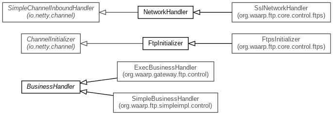

-
Class Summary
| Class |
Description |
| BusinessHandler |
This class is to be implemented in order to allow Business actions according
to FTP service
|
| FtpInitializer |
Pipeline factory for Control command connection
|
| NetworkHandler |
Main Network Handler (Control part) implementing RFC 959, 775, 2389, 2428,
3659 and supports XCRC and XMD5
commands.
|
Package org.waarp.ftp.core.control Description
Classes implementing Control connections.
The internal logic is the following:
- When a connection is opened for control network:
It first creates
the default startup command
(ConnectionCommand), then it answers it is ok to accept identification (which
is implied by
ConnectionCommand).
- Each time a command is received:
- Parsing the command
in order to find the corresponding class that
implements it.
- Checking if the command is legal now
such that no transfer is
currently running except if is a
special command (like QUIT or ABORT).
- Checking if the command is legal from workflow
that is to say the
previous command allows the
usage of the current command (for instance, no transfer command is allowed if
the authentication is not
finished).
- Running the command
with executing a pre and post operation on
business handler.
- Making the final answer of the command
(in some cases this is a
partial answer like ready to
transfer)
- When an exception occurs
the connection will be closed.
- When the connection is closed
all attributes are cleaned.